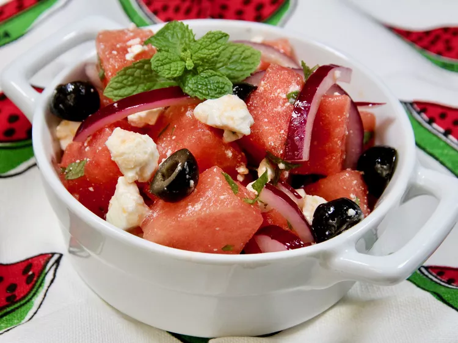

Barbaqued ribs
Home

Description
For a unique recipe, this watermelon salad includes red onion, black olives, mint, and feta cheese. “This is a recipe I stumbled upon one hot lazy afternoon,” says recipe creator Jessica Mayo. “Don’t be scared by the ingredients, they work together to make a very tasty and refreshing salad. Go ahead and try it—be prepared for a pleasant surprise!”
Ingredients
- ¾ cup halved, thinly sliced red onion
- 1 tablespoon fresh lime juice
- 1 ½ quarts seeded, cubed watermelon
- ¾ cup crumbled feta cheese
- ½ cup pitted black olive halves
- 1 cup chopped fresh mint
- 2 tablespoons olive oil
Steps
- Place the onion slices in a small bowl with the lime juice. The acid of the lime will mellow the flavor of the raw onion. Let stand for 10 minutes.
- In a large bowl, combine the watermelon cubes, feta cheese, black olives, onions with the lime juice, and mint. Drizzle olive oil over it all, and toss to blend. Dig in and be prepared for a pleasant surprise!